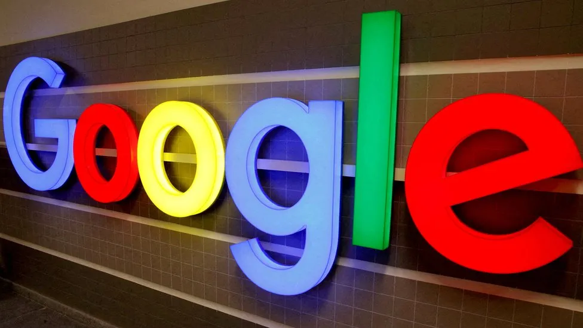

Google settles $5bn lawsuit for 'private mode' tracking
29 December 2023
By Annabelle Liang
Business reporter
Google has agreed to settle a US lawsuit claiming it invaded the privacy of users by tracking them even when they were browsing in "private mode"
The class action sought at least $5bn (£3.9bn) from the world's go-to search engine and parent company Alphabet.Large technology firms have faced increased scrutiny of their practices in the US and beyond. Lawyers representing Google and its users did not immediately respond to the BBC's requests for comment.
What were people Googling in England this year?US District Judge Yvonne Gonzalez Rogers put a scheduled trial for the case on hold in California on Thursday, after lawyers said they had reached a preliminary settlement. Judge Rogers had rejected Google's bid to have the case dismissed earlier this year, saying she could not agree that users consented to allowing Google to collect information on their browsing activity. The terms of the settlement were not disclosed. However, lawyers are expected to present a formal settlement for the court's approval by February 2024.